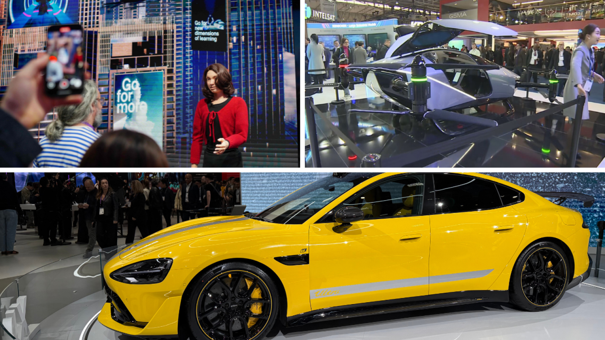

Artificial Intelligence has become the defining technology of the 21st century because it changes how systems are built, how organizations make decisions, and how societies interpret data. Earlier generations of software were dominated by programmed logic: developers explicitly defined rules, branches, and deterministic outcomes. AI introduced a structural shift toward learned patterns, where models infer behavior from examples and continuously improve through optimization.
Introduction: From Programmed Logic to Learned Patterns
Traditional software engineering excels when rules are stable and fully observable. Business workflows, accounting systems, and deterministic simulations can be represented with explicit logic and validated through strict test suites. However, many real-world environments are noisy, ambiguous, and data-rich: medical images contain subtle variations, city traffic patterns evolve dynamically, and language carries contextual meaning that cannot be reduced to static if/else trees. AI emerged as a response to this complexity gap.
Learned systems rely on statistical representations rather than hard-coded behavior. Instead of instructing every edge case, engineers define objectives, curate data, and design training processes that allow models to capture regularities across millions of observations. This shift does not eliminate engineering rigor; it relocates it to data quality, model architecture, evaluation protocols, and deployment monitoring. As a result, AI development combines software engineering, applied mathematics, domain expertise, and governance into one integrated practice.
Neural Networks & Deep Learning
Neural networks are computational structures inspired by simplified principles of biological neurons. In practice, a neural model is a layered function that transforms input data into outputs through weighted connections. During training, the model compares predictions against known targets, calculates error, and adjusts internal weights through optimization methods such as gradient descent. Repeating this process across large datasets allows the network to discover high-dimensional patterns that are difficult to encode manually.
Deep learning refers to neural architectures with many layers capable of hierarchical feature extraction. For example, in image analysis, earlier layers may detect edges and textures, intermediate layers identify shapes and object parts, and deeper layers capture semantic categories. In language models, deep representations learn syntactic structure, semantic relationships, and contextual dependencies over long sequences. The practical outcome is a broad expansion of machine capability in perception, prediction, generation, and decision support.
The hardware-software co-design behind deep learning is equally significant. Specialized accelerators, memory bandwidth optimizations, and distributed training frameworks determine how quickly models can be trained and updated. Therefore, successful AI systems are not only about model accuracy; they require efficient pipelines for data ingestion, feature engineering, experimentation, reproducibility, and real-time inference under operational constraints.
The Transformation of Industries

In healthcare, AI supports earlier and more precise diagnosis by identifying subtle anomalies in radiology scans, pathology slides, and longitudinal patient records. Clinical teams can use model-assisted triage to prioritize urgent cases, reduce diagnostic latency, and allocate specialist resources more effectively. When integrated responsibly, AI does not replace medical expertise; it augments clinical judgment with probabilistic evidence that can improve outcomes.
Urban planning has also entered an AI-driven phase. Smart city platforms process streams from mobility sensors, energy networks, environmental monitors, and public infrastructure systems to optimize traffic flow, reduce emissions, and predict maintenance needs. The key value is not automation alone, but adaptive coordination at city scale. AI can reveal patterns across systems that were previously managed in isolation, enabling more resilient and data-informed public policy.
In the creative arts, generative AI is redefining ideation and production workflows. Designers, musicians, filmmakers, and writers can iterate concepts rapidly, explore alternative styles, and prototype narrative or visual directions at unprecedented speed. This evolution raises difficult questions about authorship, originality, and compensation, yet it also expands creative access for smaller teams and independent creators who previously lacked large production resources.
Ethical Frontiers: Automation, Work, and Human-in-the-Loop Systems
The ethical debate around AI is fundamentally a systems design challenge. Automation can improve consistency and productivity, but it can also shift labor demand, amplify inequality, and reduce transparency if governance is weak. Job displacement concerns are valid, especially in roles with repetitive cognitive tasks. At the same time, new categories of work are emerging in model operations, AI safety, data stewardship, and human-centered product design.
Responsible deployment requires explicit accountability boundaries. Organizations need auditable model lifecycles, bias testing, robust documentation, and incident response protocols for harmful outputs. Human-in-the-loop systems are essential in high-stakes contexts—healthcare, finance, justice, and critical infrastructure—where decisions must remain interpretable, contestable, and aligned with legal and ethical standards.
The long-term objective is not full human removal from decision processes, but effective collaboration between algorithmic intelligence and human judgment. Visionary AI strategy combines technical ambition with institutional safeguards, ensuring that innovation remains aligned with fairness, dignity, and social trust.